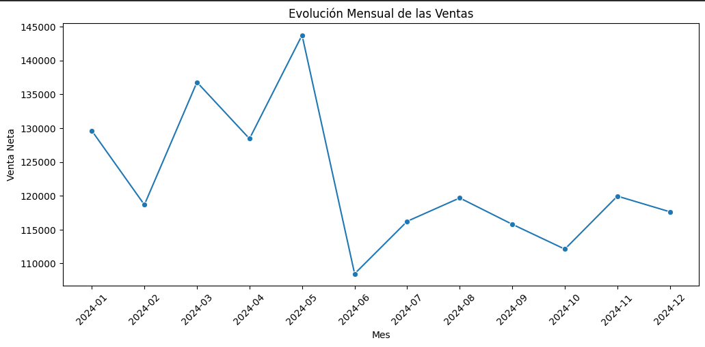
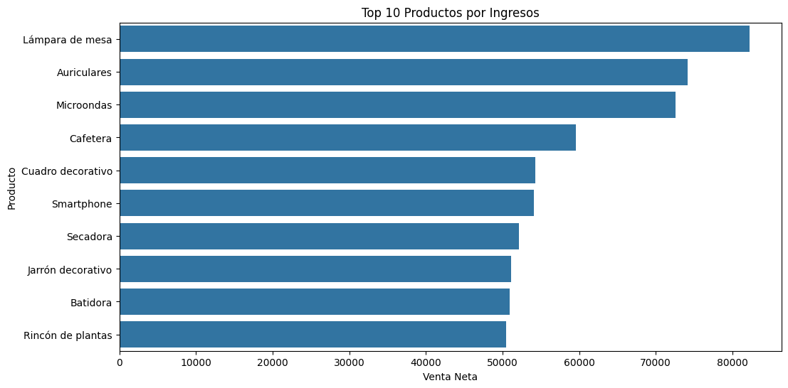
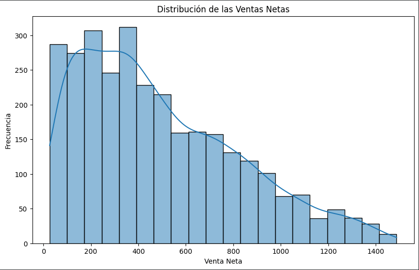
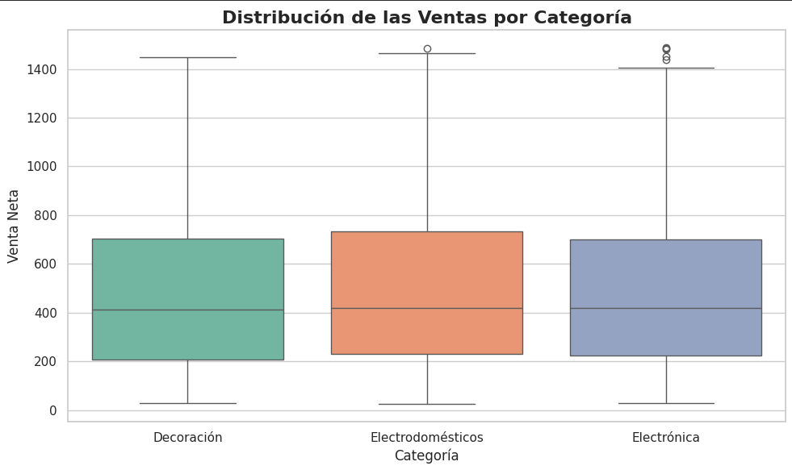
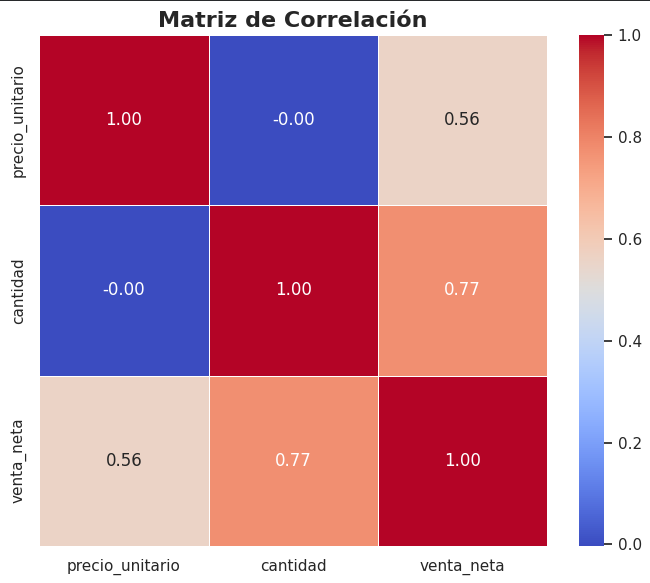

Ingreso total después de limpiar duplicados y registros incompletos.
Trabajo Práctico Integrador · Comisión C26109
Análisis integral de datos de ventas, clientes y marketing para apoyar la toma de decisiones mediante técnicas de Data Analytics.
Proyecto desarrollado sobre tres conjuntos de datos correspondientes a ventas, clientes y campañas de marketing. El análisis recorre carga, limpieza, transformación, estadística descriptiva, visualización y dashboard interactivo en Python.
Ventas limpias disponibles para el análisis final.
Venta promedio calculada sobre la variable venta_neta.
Project overview
Un flujo completo desde datos crudos hasta indicadores ejecutivos.
El objetivo del proyecto fue desarrollar un proceso completo de análisis de datos, desde recopilación y limpieza hasta visualizaciones e indicadores que ayuden a comprender el comportamiento de las ventas.
Problema de negocio
El análisis buscó ordenar información comercial dispersa para identificar patrones de ventas, productos de mayor rendimiento, comportamiento mensual y relaciones entre precio, cantidad e ingreso.
Objetivos
Se aplicaron técnicas de estadística descriptiva, análisis exploratorio, correlaciones y consolidación de información para generar resultados útiles en la toma de decisiones.
Resultado final
El proyecto integra análisis estadístico, visualizaciones y un dashboard interactivo que resume los principales indicadores del negocio.
Metodología
Flujo de trabajo.
La metodología documentada en el notebook combina exploración inicial, limpieza, transformación, análisis estadístico y construcción de un dashboard para comunicar los principales indicadores.
Carga y validación de datos
Los conjuntos de datos se cargaron desde Google Drive en Google Colaboratory y se verificaron mediante un análisis exploratorio inicial, revisando dimensiones, tipos de datos, estadísticas descriptivas, valores nulos y registros duplicados.
Limpieza y transformación
El conjunto de ventas fue normalizado renombrando variables, convirtiendo el precio a formato numérico y la fecha al tipo datetime. Además, se eliminaron registros duplicados y filas con valores nulos para garantizar la calidad de los datos.
Análisis e integración
Se calculó la variable venta_neta, se realizaron agregaciones por producto y categoría y posteriormente se integraron los datos de ventas con las campañas de marketing para ampliar el análisis del negocio.
Estadística y visualización
Se desarrolló un análisis estadístico descriptivo acompañado de visualizaciones con Matplotlib, Seaborn y Plotly, finalizando con un dashboard interactivo que resume los principales indicadores del proyecto.
Datasets
Tres fuentes con roles diferentes en el análisis.
Ventas
- Registros iniciales
- 3,035
- Variables
- 7
- Productos
- 30
Contiene productos, precios, cantidades, fechas, categorías y ventas calculadas. Presentó nulos, duplicados y campos que requerían conversión de tipo.
Clientes
- Registros
- 567
- Variables
- 5
- Edad promedio
- 37.94
Incluye información demográfica y económica. No se detectaron nulos ni duplicados; Mar del Plata fue la ciudad con mayor frecuencia de registros.
Marketing
- Registros
- 90
- Canales
- 3
- Costo promedio
- 4.93
Contiene campañas, productos, canal, costo y fechas. El dataset no tuvo nulos ni duplicados y cubre TV, RRSS y Email.
Key findings
Los ingresos se explican mejor por volumen que por precio aislado.
La matriz de correlación del notebook muestra una relación prácticamente nula entre precio_unitario y cantidad, mientras venta_neta se asocia con mayor fuerza a cantidad.
Correlación entre cantidad y venta_neta.
Correlación entre precio_unitario y venta_neta.
Coeficiente Pearson entre precio_unitario y cantidad.
Mes con mayor venta mensual: $143,727.25.
Productos destacados
El percentil 90 de ingresos por producto fue $60,902.87. Los productos por encima de ese umbral fueron Lámpara de mesa ($82,276.38), Auriculares ($74,175.58) y Microondas ($72,562.89).
Categorías equilibradas
Electrodomésticos lideró con $505,299.63, seguido por Electrónica con $482,577.80 y Decoración con $479,216.09. La diferencia entre categorías sugiere un portafolio sin dependencia excesiva de una única línea.
Distribución de ventas
La media de venta_neta fue $489.36 y la mediana $418.06. La media superior a la mediana confirma asimetría hacia valores altos, con una desviación estándar de $334.28.
Estadísticas
Resumen cuantitativo de venta_neta.
| Medida | Valor | Lectura analítica |
|---|---|---|
| Ingreso total | $1,467,093.52 | Total calculado después de limpieza. |
| Media | $489.36 | Promedio por operación limpia. |
| Mediana | $418.06 | El 50% de las ventas queda por debajo de este valor. |
| Moda | $345.33 y $1,058.31 | Distribución bimodal según el notebook. |
| Mínimo / máximo | $26.30 / $1,488.12 | Rango amplio entre operaciones de bajo y alto importe. |
| Percentil 75 | $709.92 | La mayor parte de las ventas se concentra por debajo de $710. |
Visualizaciones
Lecturas visuales generadas desde el análisis.
Las imágenes corresponden a los gráficos exportados del notebook: distribución de ventas, top productos, evolución mensual, boxplot por categoría y matriz de correlación.





Dashboard e insights
Una vista ejecutiva para seguimiento mensual.
El dashboard de Plotly reúne ingreso total, venta promedio, ventas mensuales, ingresos por categoría, relación precio-cantidad y top 10 productos. El notebook destaca que su interactividad permite explorar detalle mediante zoom, desplazamiento y hover.
Recomendaciones documentadas
- Continuar monitoreando mensualmente el desempeño de ventas mediante dashboards interactivos.
- Analizar en mayor profundidad los productos con mayor ingreso para identificar factores de éxito.
- Incorporar variables como descuentos, promociones o estacionalidad para ampliar futuros análisis.
- Mantener procesos periódicos de validación y limpieza de datos antes de nuevos estudios.
Technologies used
Herramientas aplicadas en el notebook.
El análisis se desarrolló en Python con pandas y numpy para manipulación de datos, Matplotlib y Seaborn para visualizaciones estadísticas, y Plotly para el dashboard interactivo.
Carga, limpieza, conversión de tipos, agregaciones e integración de datasets.
Soporte para operaciones numéricas durante el análisis.
Distribuciones, boxplots y matriz de correlación.
Dashboard interactivo con KPIs y visualizaciones de negocio.
Recursos
Materiales del proyecto.
Notebook
Trabajo Práctico Integrador
Archivo .ipynb usado como fuente de verdad para esta presentación.
Google Drive ventas.csvDataset de ventas enlazado en la carga del notebook.
Google Drive clientes.csvDataset de clientes utilizado para el análisis exploratorio inicial.
Google Drive marketing.csvDataset de campañas y canales de marketing integrado por producto.
GitHub Pages Proyecto estáticoHTML, CSS, JavaScript y assets listos para publicar desde este directorio.
Herramientas
Tecnologías utilizadas
Herramientas y bibliotecas empleadas durante el desarrollo del proyecto para la recopilación, preparación, análisis y visualización de los datos.
Python
Lenguaje principal utilizado para el análisis de datos.
Pandas
Carga, limpieza, transformación y manipulación de datos.
NumPy
Operaciones numéricas y cálculos estadísticos.
Matplotlib
Visualizaciones exploratorias y gráficos personalizados.
Plotly
Construcción del dashboard interactivo del proyecto.
Google Colab
Entorno de desarrollo y ejecución del notebook.
Google Drive
Almacenamiento y gestión de los datasets y entregables.
GitHub Pages
Publicación del caso de estudio como sitio web.
Conclusión
La calidad de datos fue la base para convertir registros operativos en lectura de negocio.
El proyecto recorrió preparación, limpieza, análisis y visualización de datos para generar indicadores confiables. Los resultados del notebook muestran un portafolio equilibrado por categoría, productos destacados claramente identificados y una relación más fuerte entre volumen vendido e ingreso que entre precio unitario y cantidad.